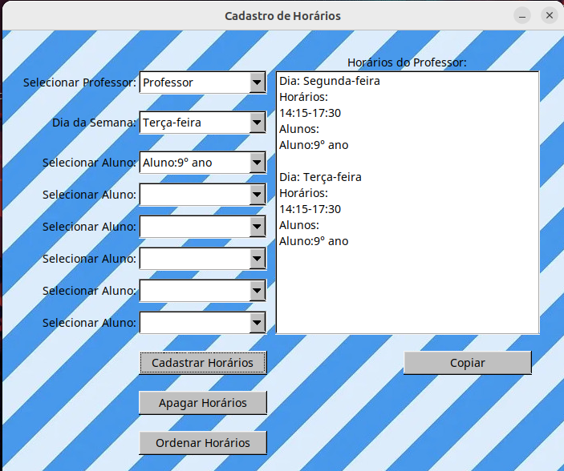

O Manager Time é um aplicativo desenvolvido para otimizar a gestão de horários escolares, oferecendo uma solução prática e eficiente para o cadastro de professores, alunos e horários. Com foco na organização e na praticidade, o sistema permite que os administradores realizem o registro dos professores, especificando as disciplinas lecionadas, bem como as suas respectivas disponibilidades semanais. Além disso, o Manager Time facilita o cadastro de alunos, permitindo a formação de grupos de até seis alunos por turma. A partir desses dados, o aplicativo organiza e gera automaticamente um cronograma semanal, integrando a disponibilidade dos professores com as demandas das turmas, garantindo que as aulas sejam distribuídas de forma otimizada. O aplicativo não apenas simplifica a tarefa administrativa de organizar horários, como também garante que todos os dados sejam salvos e facilmente acessados para consulta ou alteração. Com uma interface amigável e funcionalidades robustas, o Manager Time se destaca como uma ferramenta essencial para escolas e instituições de ensino que buscam uma solução completa para a organização de seus horários escolares.
A página inicial do Manager Time apresenta uma interface amigável e intuitiva, com botões claros para facilitar a navegação. Nela, é possível encontrar as opções: Cadastrar Professores: permite o registro dos professores e suas respectivas disciplinas. Cadastrar Horários: possibilita a definição dos horários disponíveis de cada professor. Cadastrar Alunos: facilita o cadastro dos alunos e o agrupamento em turmas. Formular Horários: reúne todas as informações cadastradas para gerar automaticamente o cronograma escolar. Essa estrutura simples e funcional garante uma navegação fácil para os usuários.
O botão Cadastrar Professores na página inicial do Manager Time permite o registro rápido e eficiente dos professores. Ao clicar nele, o usuário é direcionado para uma tela onde pode inserir o nome do professor e as disciplinas que ele leciona. Além disso, há um botão adicional que possibilita a exclusão de professores pelo nome, garantindo uma fácil gestão do corpo docente. A interface simples e organizada garante que o cadastro e a exclusão de professores sejam feitos de forma intuitiva, facilitando a manutenção do sistema sem complicações.
O botão Cadastrar Horários permite que os horários semanais dos professores sejam registrados de maneira simples e eficiente. Ao acessar essa opção, o usuário pode selecionar o professor previamente cadastrado e inserir sua disponibilidade para cada dia da semana. Além disso, a interface oferece dois botões adicionais: um para excluir o horário de um professor específico e outro para remover todos os horários cadastrados no sistema, facilitando o reinício de um novo cadastro do zero. Essa flexibilidade garante uma gestão prática e organizada dos horários, mantendo o sistema sempre atualizado conforme as necessidades.
O botão Cadastrar Alunos permite o registro dos alunos de forma prática e organizada. Ao acessar essa opção, o usuário pode inserir os nomes dos alunos e associá-los a turmas ou grupos de até seis alunos, facilitando a alocação em horários de aula. Além disso, a interface oferece um botão para excluir alunos pelo nome, tornando a gestão de cadastros ainda mais eficiente. Isso simplifica a organização das turmas e otimiza o planejamento dos horários escolares, garantindo um controle fácil e rápido sobre as informações dos alunos.
O botão Formular Horários abre uma segunda tela indicando duas opções. O primeiro botão gera os horários manualmente de forma parcialmente automatica, já o segundo botão está sendo desenvolvido para gerar os horários de forma totalmente automática. O sistema terá atualizções recorrentes e na próxima versão essa funcionalidade já estará disponível.
O botão Gerar Horários Manualmente permite que o usuário crie e ajuste o cronograma escolar de forma personalizada. Ao selecionar esta opção, o usuário pode combinar as informações de professores, alunos e horários cadastrados para formar um horário semanal completo. Além disso, a interface inclui um botão Ordenar Horários, que organiza automaticamente os horários de forma a seguir a sequência de segunda a sexta-feira, garantindo uma visualização clara e estruturada. Outro botão disponível é o Copiar Conteúdo, que facilita a cópia de todo o conteúdo dos horários para a área de transferência, simplificando o envio e a partilha das informações com outros interessados. Essas funcionalidades adicionais garantem uma gestão eficiente e uma fácil manipulação dos dados do cronograma escolar. Caso também seja de interesse do usuário de alterar um dos horários, basta cadastrar novamente no mesmo dia que o cadastro será sobrescrito. Também temos a funcionalidade de que os dias que aparecem para cadastro são somente os que o professor tem disponível!
 Voltar para a página inicial Voltar ao topo Quero este app!